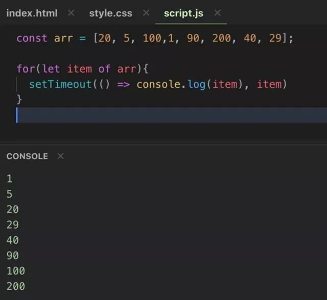
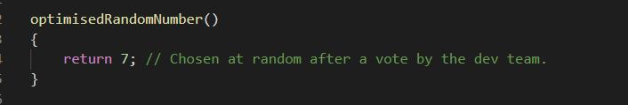
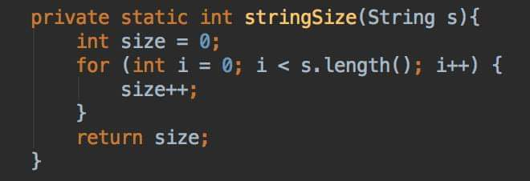

Code Reviews
Among Reddit’s most popular 社区 are r/badcode, a “place for the very worst code you’ve ever laid your eyes on,” and r/programminghorror, a place to share “strange or straight-up awful code.” Let’s review some of the code ourselves.
Consider SleepSort, below:

Source: reddit.com/r/badcode/comments/lgrgxe/i_present_sleepsort
-
(1 point.) In what language is SleepSort implemented?
-
(2 points.) In no 更多 than two sentences, why is SleepSort correct? Put another way, how does it work?
-
(2 points.) In no 更多 than two sentences, in what way is SleepSort poorly designed?
Consider optimisedRandomNumber, below:

Source: reddit.com/r/badcode/comments/hkxndd/i_mean_its_o1_so_who_cares
- (2 points.) Why is the running 时间 of
optimisedRandomNumberin \(O(1)\)?
Consider getrandomnumberbetween1and10, below, which we’ve transcribed from the original post:
1 function getrandomnumberbetween1and10() {
2 let number = Math.random();
3 if (number <= 0.1) {
4 return 1;
5 }
6 else if (number <= 0.2) {
7 return 2;
8 }
9 else if (number <= 0.3) {
10 return 3;
11 }
12 else if (number <= 0.4) {
13 return 4;
14 }
15 else if (number <= 0.5) {
16 return 5;
17 }
18 else if (number <= 0.6) {
19 return 6;
20 }
21 else if (number <= 0.7) {
22 return 7;
23 }
24 else if (number <= 0.8) {
25 return 8;
26 }
27 else if (number <= 0.9) {
28 return 9;
29 }
30 else if (number <= 1) {
31 return 10;
32 }
33 }
Source: reddit.com/r/badcode/comments/m2b4e2/my_friends_take_on_random_integers
-
(2 points.) Is the above implementation of
getrandomnumberbetween1and10correct? Put another way, does it return a pseudorandom number between 1 and 10, inclusive? In no 更多 than 2 sentences, why or why not? -
(3 points.) In a file called
getrandomnumberbetween1and10.js, re-implementgetrandomnumberbetween1and10(in JavaScript) in such a way that your implementation is both correct and well-designed.
Consider stringSize, below, which is implemented in a language called Java (not JavaScript):

Source: reddit.com/r/programminghorror/comments/dx65ys/found_on_facebook
-
(3 points.) Assuming this implementation of
stringSizeis syntactically correct, is it also logically correct? Put another way, does it return the number of characters ins? In no 更多 than 2 sentences, why or why not? -
(2 points.) In no 更多 than two sentences, in what way is
stringSizepoorly designed?